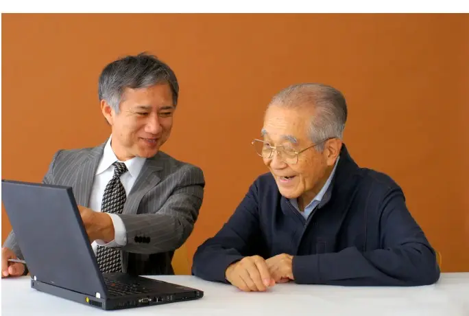

協会について
ABOUT新潟の中小企業のための、
新潟県でM&A・事業承継・企業再生の相談は
新潟の中小企業のための、
M&A相談窓口です。
「後継者がいない」「赤字や債務超過で先が見えない」「順調だからこそ、もっと事業を広げたい」——
会社の将来についての悩みは、経営者さまの数だけあります。
新潟スモールM&A協会は、新潟県の中小企業・個人事業主さまのためのM&A・事業承継・企業再生の相談窓口です。
あなたと会社にとって最適な将来像を一緒に考え、「納得のいく事業承継」を全力でサポートします。
M&Aは、決して大きな会社だけのものではありません。
「うちでもできるのかな？」——そんな段階から、どうぞお気軽にご相談ください。
新潟の地域密着を軸にしながら、首都圏の大手仲介会社とのネットワークもあり、新潟の近県や首都圏の案件にも対応できます。

COMPANY
協会概要
| 名称 | 一般社団法人 新潟スモールM&A協会 |
|---|---|
| 代表理事 | 鈴木 浩一（すずき こういち） |
| 所在地 | 新潟県新潟市東区 ご面談は、ご訪問またはオンラインを基本としています |
| 電話番号 | 025-290-7600 |
| FAX番号 | 025-250-5855 |
| 受付時間 | 10:00〜18:00 |
| 定休日 | 土曜・日曜・祝日 |
| ご支援実績 | 15件（M&A・事業承継・経営改善など） |
| 対応エリア | 新潟県全域、新潟の近県・首都圏 |
| 主なサービス | 事業承継をメインにした、経営コンサルタント業務全般 |
| 登録・宣言 | 中小企業庁「M&A支援機関登録制度」登録（2021年） 中小M&Aガイドライン（第3版）遵守宣言 |
沿革
- 2005.04NBCニイガタビジネスセンター発足
- 2019.10新潟スモールM&A勉強会 開始
- 2020.10一般社団法人 新潟スモールM&A協会 設立
- 2021中小企業庁「M&A支援機関登録制度」に登録
ご相談の場所
ご面談は、お客さまの会社へのご訪問またはオンラインを基本としています。ご希望に応じて、会議室などでの面談も調整いたします。
- 訪ご訪問新潟県内の御社へ
お伺いします - オオンラインご自宅や会社から
お気軽に - 会会議室などご希望に応じて
調整します
※新潟の近県・首都圏のご相談もお気軽にどうぞ。